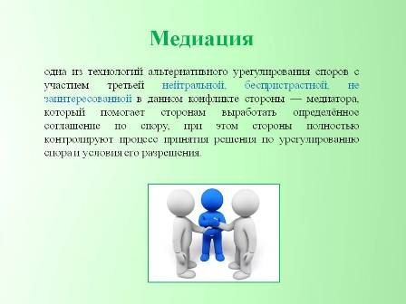
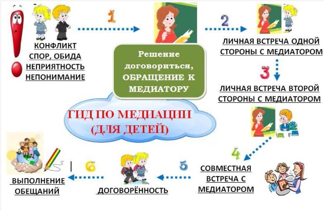

Муниципальное бюджетное общеобразовательное учреждение "Средняя школа № 3 имени А.Н. Першиной" г. Енисейска Красноярского края
|
Меню сайта
Категории раздела
Полезные ссылки на официальные порталы!
Статистика
Онлайн всего: 1 Гостей: 1 Пользователей: 0 |
Служба медиации (примирения)  Руководитель школьной службы медиации: Ермохина Юлия Александровна., педагог-психолог Медиация - это новое явление в нашей жизни, новый прогрессивный способ решения неглубоких конфликтов без антагонистических противоречий. Ниша новая, и относительно незанятая, пока ещё и весьма перспективная.
Медиаторство - это новый шаг в
развитии общественных отношений. Оказывается, что не надо махать
"шашками", и твой визави не злодей, а просто может быть
заблуждающийся, а может это ты заблуждаешься, и есть возможность мирным путём
выяснить реальную ситуацию. Ведь недаром мудрые говорят, что старость это не
возраст, не состояние здоровья, а состояние душу и старость наступает с того
момента когда человек перестаёт сомневаться в собственной правоте. Человек
всегда должен допускать справедливую мысль, что он не Господь Бог и не может
являться истиной в последней инстанции. В этом и заключается очередной шаг в
развитии человеческой культуры.
Медиация - отрасль права Что же является в медиации альтернативностью императивности судебной системы? Это, естественно, основной базис медиации - добровольность (ст.3 Закона). Отсюда, сам процесс урегулирования споров остаётся практически не тронутым по отношению к классическому - существующему, только несколько видоизменяется подход к рассмотрению спора, исчезает его безапелляционность. Инструментарий же решений медиативных проблем, в свою очередь, не ограничивается по сравнению с судебной системой только существующей нормативной базой, но и расширяется за счёт моральных и психологических аспектов, и основывается на участии посредника - доверенного лица спорящих Сторон и наличия взаимного стремления к разрешению конфликта. Медиация - отрасль права, основанная на разрешении конфликта с участием третьей нейтральной, беспристрастной, не заинтересованной в данном конфликте стороны - медиатора, который помогает сторонам выработать определенное соглашение по спору, при этом стороны полностью контролируют процесс принятия решения по урегулированию спора и условия его разрешения. Медиатора признают обе стороны и мнение его уважают. В результате достигнутого соглашения выигрывают все. Медиация - это процедура примирения конфликтующих сторон, путем их вступления в добровольные переговоры в присутствии нейтрального лица - медиатора (посредника), с целью достижения взаимопонимания и принятия взаимоустраивающих решений, разрешающих конфликтную ситуацию. Медиация в России - это молодая, недавно родившаяся отрасль права, родоначальниками которой стали два самых известных юриста в Стране. Медиация молодое дитя юриспруденции, представляющее собой новый прогрессивный шаг в развитии культуры общественных отношений, ухода от существующего авторитаризма к добровольности и стремлению к сотрудничеству и взаимопониманию. Естественно, как и любая отрасль права, медиация как минимум должна состоять из двух основных частей: это процессуальные нормы и правил и материальные нормы. Но медиация не является обычной отраслью права, а является альтернативой к существующей императивной системе рассмотрения споров, поэтому она включает в себя, и нормы морали и психологию. Итак, медиация, как отрасль, состоит из четырёх основных частей: 1. Процессуальные нормы; 2 Материальные нормы; 3. Нормы морали; и 4. Психология. В основе Медиации не лежит общепринятый в споре принцип я прав а та не прав, а лежит принцип возможно ты прав, а я не прав, возможно я прав, а мой визави не прав, и пусть специалист в этой области нас рассудит, т.е налицо резко другой уровень культуры человеческого общения. Нельзя недооценивать общественную значимость медиации, так как медиация является новым прогрессивным шагом в развитии человеческой культуры. Предмет и система разрешения споров Предмет медиации - это успешное проведение переговоров между двумя или несколькими конфликтующими сторонами с участием медиатора, в результате которых стороны заключают примирительное (медиативное) соглашение. Во всем мире медиация становиться одной из самых популярных форм урегулирования споров. Медиация позволяет уйти от потери времени в судебных разбирательствах, от дополнительных и непредсказуемых расходов, процесс медиации является частным и конфиденциальным. В основе процедуры медиации лежит посредническая деятельность третьей, независимой и нейтральной к предмету спора стороны (Медиатора), обладающей достаточными познаниями как в вопросах законодательства и права, так и в вопросах конфликтующих сторон, и направленная на внесудебное урегулирование споров. Процедура медиация Процедура медиация, согласно ст. 2 Федерального закона "Об альтернативной процедуре урегулирования споров с участием посредника" от 27.07.2010г. N193-ФЗ - это способ урегулирования споров при содействии медиатора на основе добровольного согласия сторон в целях достижения ими взаимоприемлемого решения. Цель медиации Цель медиации - добиться взаимоустраивающего соглашения между сторонами. При этом все решения относительно предмета переговоров и способа разрешения конфликта принимает не медиатор, а сами стороны. Необходимым условием медиации является добровольное участие сторон. Медиатор помогает сторонам пройти через процесс коммуникации, модуль, состоящий из заранее определенных шагов. Переговоры могут включать в себя от 3 до 15 таких шагов. Цель медиации - способствовать достижению конструктивного урегулирования конфликта, но не гарантировать это заранее или предупредить его возникновение. Медиатор - это нейтральное третье лицо, сопровождающее процесс для разрешения конфликта и для достижения конкретного соглашения. При помощи медиаторов можно найти решения, при которых не будет ни побежденных, ни победителей. Основной задачей медиатора является содействие способности участников спора придти к урегулированию своего конфликта самостоятельно. Урегулирование конфликта должно происходить путём предоставления им со стороны медиатора возможности изучить все законные способы разрешения Спора. Медиатор должен предоставить Сторонам современную законодательную базу по конфликтному вопросу для того, чтобы определить путем переговоров на основе убеждения каждой из сторон в справедливости решения вопроса, приемлемого для каждой из Сторон конфликта. Медиация в рамках отечественной правовой системы представляет собой деятельность, осуществляемую за пределами судопроизводства, и может использоваться в дополнение к структуре правосудия. Процедура примирения должна осуществляться за рамками заранее определённого процесса, и лицо, выступающее в качестве медиатора, является процессуальной фигурой. Процедуры медиации, на сегодняшний день не отработаны юристами, психологами, социологами. В случае использования результатов процесса медиации в дальнейшем судопроизводстве имеет основополагающее значение законность при её проведении. Медиация или вне судебное улаживание коммерческих споров сегодня - широко распространенная в мире практика. Эту форму урегулирования бизнес-конфликтов предприниматели считают весьма эффективной и при этом малозатратной. Подобный способ разрешения споров осваивают и в России. Но, по словам Цисаны Шамликашвили, Президента Научно-методического центра медиации и права, продвижению данного инструмента препятствует инертность российского общественного сознания. Медиация, как способ разрешения споров, процедура глубоко уходящая корнями в историю развития человеческих отношений, и оформившаяся как современная технология рассмотрения конфликтных ситуаций лишь во второй половине ХХ столетия. При всем многообразии сходства с другими формами разрешения разногласий, медиация имеет несколько принципиальных отличий. Основное из них - присутствие при разбирательстве третьей нейтральной стороны, которая не выносит никаких решений, однако участвует, вникает, изучает проблему и содействует принятию решения самими конфликтующими сторонами. Процедура медиации - это структурированный процесс, сама медиация как отрасль знаний находится в междисциплинарной области, совместивший в себе такие отрасли знания, как право, психология, социология, лингвистика, конфликтология. ВЫ МОЖЕТЕ ОБРАТИТЬСЯ В СЛУЖБУ ШКОЛЬНОЙ МЕДИАЦИИ Правовая основа организации служб школьной медиации Правовой основой создания и деятельности служб школьной медиации является: Конституция Российской Федерации; Гражданский кодекс Российской Федерации; Семейный кодекс Российской Федерации; Федеральный закон от 24 июля 1998 г. N 124-ФЗ "Об основных гарантиях прав ребенка в Российской Федерации"; Федеральный закон от 29 декабря 2012 г. N 273-ФЗ "Об образовании в Российской Федерации"; Конвенция о правах ребенка; Конвенции о защите прав детей и сотрудничестве, заключенные в г. Гааге, 1980, 1996, 2007 годов; Федеральный закон от 27 июля 2010 г. N 193-ФЗ "Об альтернативной процедуре урегулирования споров с участием посредника (процедуре медиации)"; Формы работы Школьной службы примирения: 1. Проведение программ примирения (медиаций) между участниками конфликтных ситуаций. 2. Проведение «кругов сообщества» в школьных коллективах. 1. Медиация (программы примирения, программы по заглаживанию вреда). Часто находящиеся в конфликте стороны не могут поговорить самостоятельно, потому что они охвачены эмоциями и недоверием друг к другу, настроены агрессивно. Поэтому на встрече сторон нужен медиатор - нейтральный посредник, ведущий встречи, - который не будет никого ни обвинять, ни защищать, будет равно поддерживать обе стороны и контролировать безопасность ситуации и соблюдение правил встречи. При этом ответственность за разрешение ситуации принадлежит самим сторонам, и только они сами принимают решение по поводу своей ситуации. Конечно, сразу стороны могут быть не готовы к подобному диалогу. Для подготовки сторон к примирительной встрече проводятся предварительные встречи с каждым участником. На такой встрече ведущий дает участнику возможность рассказать свою версию и обсудить причины произошедшего, помогает выговориться, притупить агрессивные чувства, стать способным слушать и воспринимать другого человека, проясняет его потребности, рассматривает различные возможные пути разрешения конфликта, в том числе участие в примирительной встрече, а в случае согласия на встречу договаривается о соблюдении правил. Целью программы примирения конфликтующих сторон является создание условий для проведения конструктивного диалога между сторонами с тем, чтобы они поняли друг друга, приняли на себя ответственность за произошедшее и самостоятельно выработали совместное решение по устранению конфликта, заглаживанию нанесенного вреда и налаживанию дальнейших взаимоотношений так, чтобы исключить повторение произошедшего. Ведущий не уговаривает человека участвовать в примирительной встрече. Участие в программе может быть только добровольным, то есть в случае отказа хотя бы одной из сторон встреча не проводится. Но в этом случае могут быть проведены другие программы, помогающие удовлетворить потребности согласившейся стороны и восстановить ее жизненную ситуацию, нарушенную конфликтом. Важнейшим принципом медиации является конфиденциальность. Согласно правилам встречи ничего из произошедшего на встрече не выносится вовне, вследствие чего участники чувствуют себя достаточно безопасно. Если администрации школы необходим отчет о проведенной программе, ведущий вместе с участниками договаривается о его содержании. 2. «Круги». «Круг» – одна из очень эффективных форм восстановительных программ, которая способствует подключению к решению проблемы всех заинтересованных людей и обеспечивает их активное участие в обсуждении ситуации и принятии решения. Главная особенность «круга» – наличие возможности для каждого участника высказать свою точку зрения и быть услышанным другими участниками круга. «Круги» – это древнее средство, которое существует в различных видах во многих культурах. Это форма, которая позволяет обеспечить более тесный контакт между людьми, и тогда конфликт превращается в возможность для построения взаимоотношений. Круги дают своим участникам форму для разделения ответственности за обсуждаемую ситуацию и для ее разрешения и достижения договоренностей. Причем помимо возможности для договоренности круги приносят качественно иные и гораздо более ценные результаты – взаимопонимание, доверие, новое поведение, изменение жизненных позиций и отношений. Процедура «круг» может быть использована для разрешения конфликтов в коллективах или группах людей, где каждый из участников лично и эмоционально включен в ситуацию. Все вопросы, которые выносятся на «круг», должны соответствовать поставленной цели, их содержание тщательно продумывается, анализируются возможные последствия коллективного обсуждения. Конечный же результат, при соблюдении всех необходимых условий, будет зависеть от людей, составляющих круг, от их желания разрешить проблему. Процесс обсуждения в «круге» основывается на определенной процедуре, обеспечивающей безопасность и взаимное уважение. Круг организуется и проводится ведущим, который формулирует вопросы для обсуждения, рассказывает о правилах и следит за их соблюдением, несет ответственность за атмосферу, создающуюся в круге. В круге существует «говорящий предмет», и право говорить имеет только тот, кто держит его в руках. Круг продолжается до тех пор, пока кому-то из участников есть, что сказать по обсуждаемому вопросу. Данная процедура, помимо того что она является крайне действенным способом создания определенной атмосферы, объективно способствует принятию участниками осознанного и ответственного решения, поскольку изначально задает возможность каждому высказаться и быть услышанным. «Круги» могут проводить после прохождения соответствующего обучения как подростки - участники Службы примирения, так и куратор Службы. |
Данные школы
Муниципальное бюджетное общеобразовательное учреждение
"Средняя школа № 3 имени А.Н. Першиной"
г.Енисейска Красноярского края
ОГРН 1022401273498
ИНН 2447004263
КПП 2440701001
г. Енисейск, ул. Ленина, 102 Навигатор ДО
Вакансии учителей в общеобразовательных организациях Красноярского края по состоянию на 20 августа 2017 года по данным муниципальных образований края 76-летие Победы
«Большая перемена»
400 лет енисейску
Гос услуги
Социальные видеоролики
Поиск
Музей - онлайн
Год памяти и славы
Друзья сайта
|
|